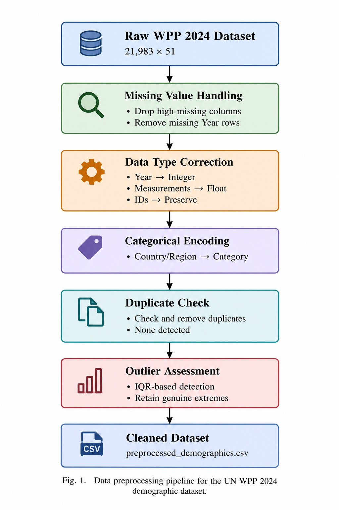

Problem statement
Aggregate demographic statistics, such as the share of women in a population, often hide what is really happening underneath. Two countries can show almost the same number for very different reasons.
Our problem statement was to clean and explore a large global demographic dataset, find the relationships between fertility, mortality and life expectancy, and then explain why India, China and Niger follow sharply different trajectories even though their summary ratios can look alike.
The outcome is a set of graphs and case studies that show what drives each country’s pattern: policy-driven sex selection in China, a historical reversal in gender mortality in India, and a data artifact caused by migration and weak early census data in Niger.
Dataset
We used the United Nations World Population Prospects 2024 file “Demographic Indicators (Full)”. It holds historical estimates (1950–2023) and medium-variant projections for the World, UN regions, and individual countries and areas.
Official data source: United Nations, Department of Economic and Social Affairs, Population Division. Access the WPP 2024 dataset and downloads .
- Size: 21,983 rows and 51 columns when loaded.
- Identifiers: region or country name, location code, variant, type, parent code, year.
- Indicators: population size and sex ratios, total fertility rate, net reproduction rate, infant mortality rate, life expectancy (at birth and at ages 15, 40, 60, 65 and 80), median age and net migration.
Approach
- Cleaning: dropped columns with mostly missing values (Notes, ISO3, ISO2 and SDMX codes) and removed the 5 rows with no Year. Years were cast to integers, numeric columns were converted to float, and country names were stored as a category.
- Checks: no duplicate rows were found. An IQR outlier scan flagged thousands of values in count columns, but they are real differences in country size (India versus Monaco), so no rows were removed.
- Derived measures: female share of population, female share of births (100 / (100 + SRB)), and the percentage by which female life expectancy exceeds male life expectancy.
- Analysis: univariate distributions, bivariate links between fertility, mortality and life expectancy, and a time-series comparison of India, China, Niger, the United States and the World.
- The cleaned data was exported as
preprocessed_demographics.csvso the work can be reproduced.

Preprocessing pipeline
From the raw 21,983 × 51 table to the cleaned CSV: missing values, type correction, categorical encoding, duplicate check and outlier assessment.
Tools used
Python, Pandas, Seaborn, Matplotlib, Scikit-learn (StandardScaler), run in a Google Colab notebook.